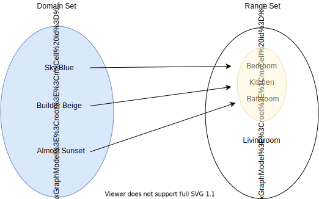
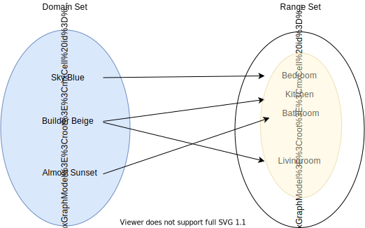

Preliminaries of functions
Functions are rules used to map one set of objects to another set of objects. These rules help to describe events that occur like the trends in the stock market, the spread of viruses, the expected run time of computer programs and much more. Functions allow us to model observed behavior, identify pattens and produce information that can be used to solve problems and support solutions.
A function has three components: two collections of items and a clear rule for moving between the collections. What makes the rule “clear,” will be the concept of a well-defined function. An illustration of a function would be a collection of paint in gallon containers, a house with rooms to be painted, and a set of instructions, our rule, for the painter that tells the painter which color paint to use with each of the rooms. To help us to represent the paint and rooms, lets use curly brackets.
Starting with the paint, we are considering all the paint available to the painter to consist of these three colors:
\[\text{Paint} = \{ \text{ Sky Blue}, \text{ Almost Sunset}, \text{Builder Beige} \}\]In the context of mathematics and computer science, the set of possible paints is referred to as the domain set for the function. It is the collection of items that we start with, so the set can also be called the source set.
The home is the collection of all possible rooms that could be painted. Again using our set notation that wraps a list of rooms separated by commas in curly brackets:
\[\text{Home} = \{ \text{Bedroom}, \text{Kitchen}, \text{Bathroom}, \text{Livingroom}\}\]The rooms in the home will be the destination for a can of paint, so the home is known as the destination set or, more commonly, the range set. Not all the rooms will necessarily be painted, so the smaller set of rooms that will be assigned a color by the rule is called the image set.
There are many rules that we could define to instruct the painter. Consider the following chart:
| Domain = Paint | Range = Home | |
|---|---|---|
| Sky Blue | Bedroom | |
| Almost Sunset | Bathroom | |
| Builder Beige | Livingroom |
Note, not every room in the home will be painted with this rule. This fact does not make the definition of a well-defined function false. The requirement is that every element in the domain set is mapped to a unique element of the range set. The collection of rooms that will be painted is referred to as the image set, and the image set of a rule is always a subset of the range set.
The table above indicates that the Sky Blue paint is for the Bedroom. Only the Bathroom will be painted the color Almost Sunset, and only the Livingroom will be Builder Beige. Since every paint color is used and every paint color will be used in only one room, the rule described is considered well-defined.
Each row of the table represents a 2-tuple, an ordered pair, consisting of one element \(x\) from the domain Set and one element \(y\) from the range Set. We can inspect each row individually as the 2-tuple \((x, y).\) The first row of the table is \((\text{Sky Blue}, \text{Bedroom}),\) the second row is \((\text{Almost Sunset}, \text{Bathroom}),\) and the third row is \((\text{Builder Beige}, \text{Livingroom}).\)
A Venn diagram allows us to visualize this rule. Note that every paint color in the domain set of our illustration is mapped to only one room in the range set. This is the key feature of a well-defined function, every element in the domain set has exactly one image in the range set. The Image set for the rule is shaded yellow, and is completely contained inside the Range set of the rule.

A rule is well-defined when every element in the source is mapped to exactly one element in the destination set.
An example of a rule that is not well-defined would be the collection of 2-tuples represented with the following Venn diagram.

For this rule, there is an element in the source that is mapped to two different elements in the destination set. So, this rule is not well-defined.
\(\{ (\text{Sky Blue}, \text{Bedroom}), (\text{Builder Beige}, \text{Kitchen}),\) \((\text{Builder Beige}, \text{Livingroom}), (\text{Almost Sunset}, \text{Bathroom})\}\).